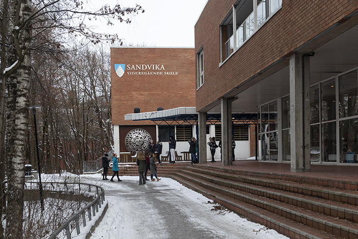

Sandvika high school is a high school in Sandvika in Bærum. The school was officially opened in August 2005 with a temporary premises at Valler upper secondary school, and the following year moved into the old premises of the BI Business School. The premises were refurbished and rebuilt after BI moved to Nydalen in the summer of 2005. The project started in 1999 when work was initiated on a building program for a new upper secondary school in Bærum.
 Return to front PageSandvika vgs. (n.d.). sandvika info. https://sandvika.info/finn-virksomhet/item/sandvika-videregaende-skole Sandvika videregående skole – Wikipedia. (2006, October 7). Wikipedia, den frie encyklopedi. Retrieved September 5, 2023, from https://no.wikipedia.org/wiki/Sandvika_videreg%C3%A5ende_skole